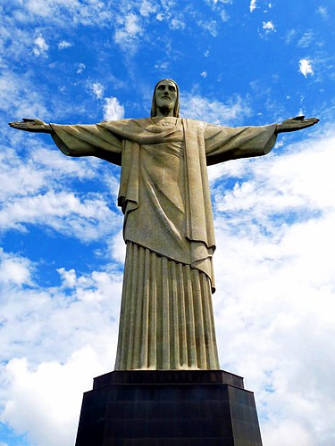

El Cristo Redentor es una de las obras más vamosas y conocidas de Brasil, y uno de los monumentos mas reconocidos del mundo.Se encuentra en la cima del monte Corcovado, en la ciudad de Río de Janeiro. Y representa a jesús con los brazos abiertos en un simbólo de paz y protección
